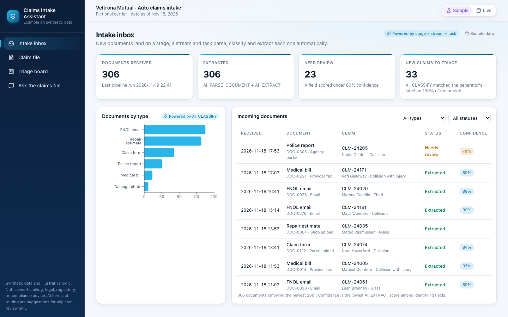
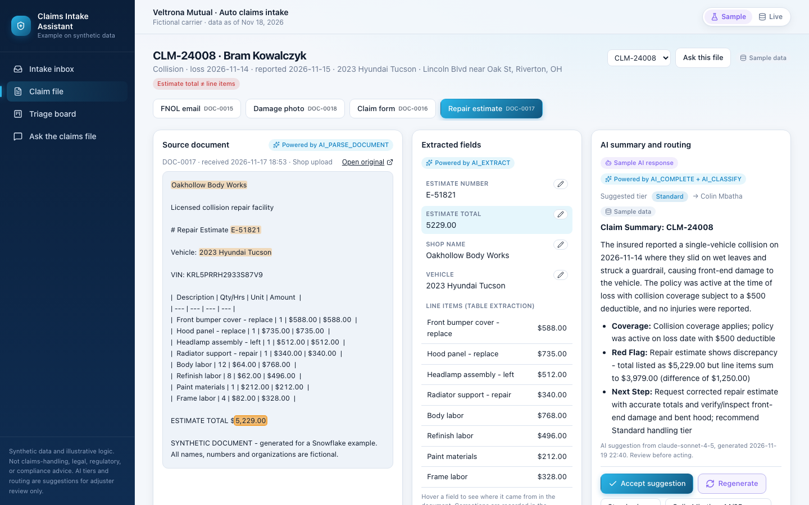
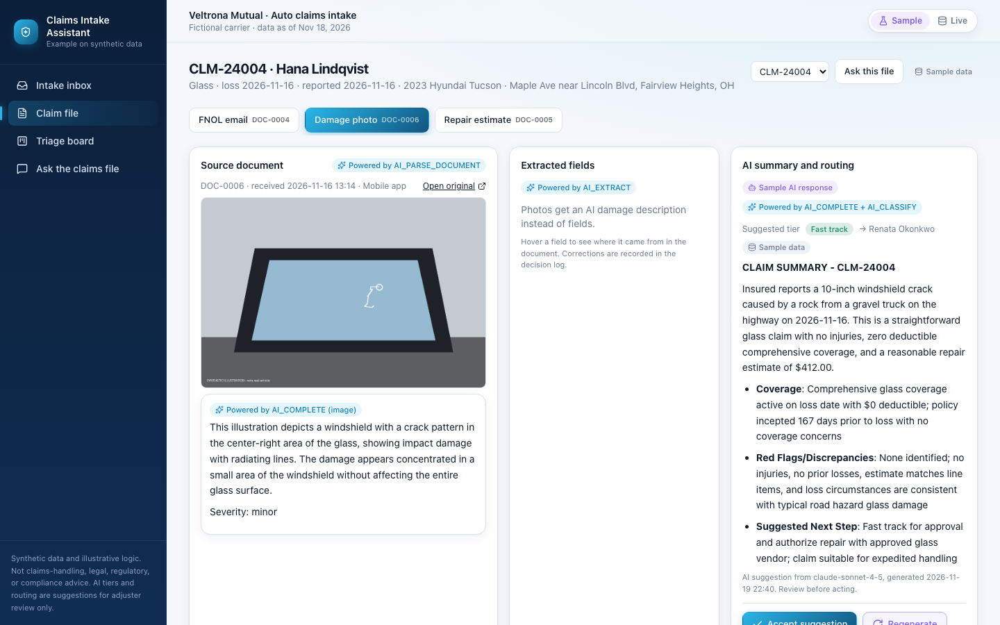
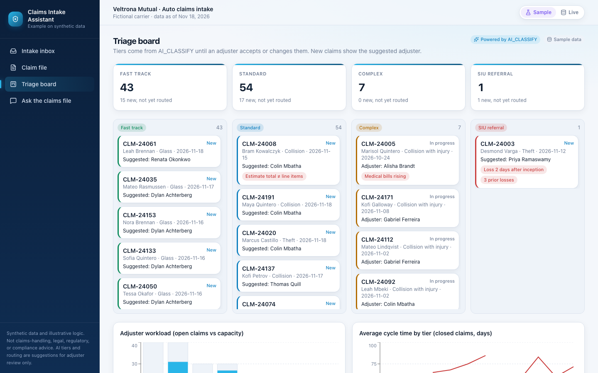
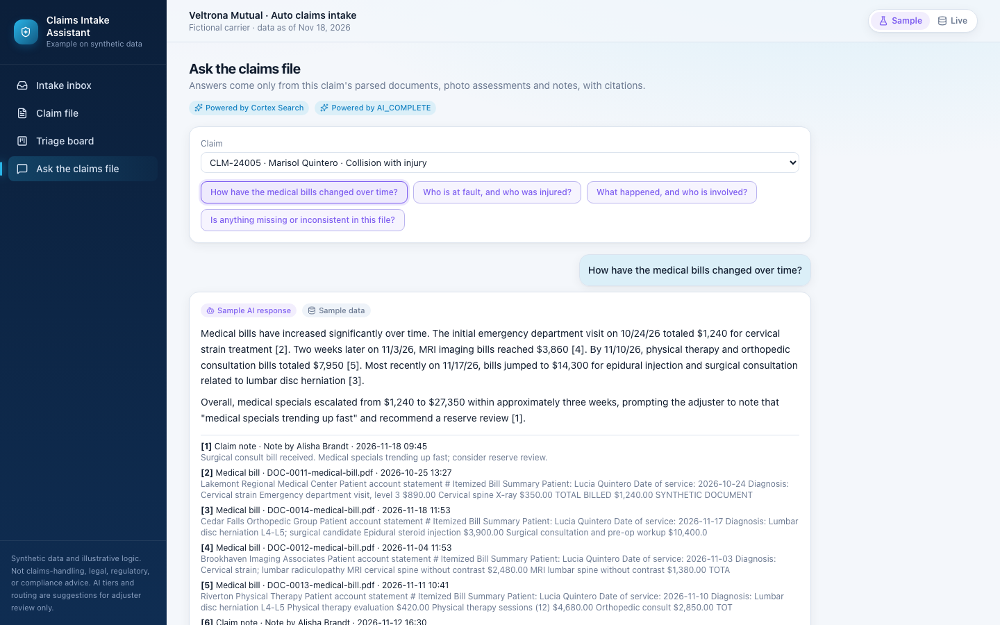
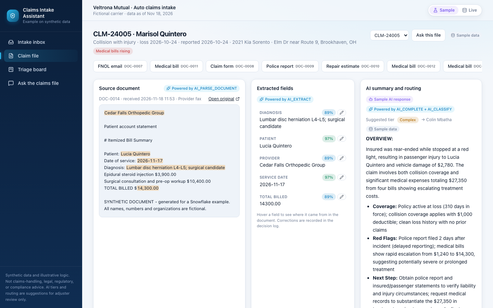

Turn every first notice of loss into a structured, triaged claim
A first notice of loss (FNOL) arrives as an email, then a claim form, a body shop estimate, a police report, medical bills and photos. Someone has to read each one, key the fields, check the policy, spot the red flags and pick an adjuster. This example reads every document as it lands, extracts the fields with confidence scores, checks coverage, suggests a handling tier and adjuster with a short AI summary, and lets the adjuster ask questions about the claim file. The adjuster stays in charge: accept, correct a field, or route it elsewhere.
Synthetic data, illustrative logic. Every person, policy, carrier, shop and clinic is fictional, and the damage photos are drawn illustrations. This is not claims-handling, legal, regulatory or compliance advice, and it isn't a production system. Tiers and routing are suggestions for an adjuster to review.
Who it's for
Intake teams
An inbox of every incoming document with its type, extraction status and confidence, so people review only what needs a second look.
Adjusters
A claim file with the source document beside the extracted fields, a coverage check, an AI summary, and questions answered with citations.
Claims managers
A triage board by tier with red flags, adjuster workload against capacity, and cycle time by tier.
Walkthrough
Screenshots of the app in no-account mode. Its data and AI text were captured from the live pipeline on the same synthetic documents. Results such as the SIU referral are planted stories on this synthetic data set.







How it works
Each capability below ran in live mode on a Snowflake account in AWS US East 1 in November 2026.
| Step | Snowflake capability | What it does here |
|---|---|---|
| Intake | Stage, directory table, stream and task | New files on the stage are queued by a stream; a task calls one procedure whenever the stream has data. |
| Read | AI_PARSE_DOCUMENT | OCR and layout for every PDF, including the estimate tables. |
| Classify | AI_CLASSIFY | Names the document type (it agreed with the generator's label on all 306 documents in our final run) and suggests a handling tier from the claim's facts. |
| Extract | AI_EXTRACT | Pulls the fields for each document type with a confidence score per field, and extracts estimate line items as a table. |
| Photos | AI_COMPLETE on an image | Describes the visible damage and rates its severity. |
| Coverage and red flags | SQL views | Policy in force, deductible, days since inception, estimate total vs line items, medical bills vs med pay, prior losses. |
| Summary and routing | AI_COMPLETE and SQL | Writes the adjuster summary from the fact sheet; suggests the least-loaded adjuster with the right skills. |
| Ask the claims file | Cortex Search and AI_COMPLETE | Searches one claim's documents, photo assessments and notes, then answers with numbered citations. |
| Decisions | Table writes from the app | Accept, correct and route actions are stored with who made them and when. |
Get started
No account
Open the hosted example, or run it locally with Node.js 20.19 or later:
git clone https://github.com/sfc-gh-ooral/sfguide-claims-intake-assistant.git
cd sfguide-claims-intake-assistant
npm install
npm run devAI answers in this mode are captured from the live pipeline and labeled Sample AI response.
Your Snowflake account
- Run
sql/setup.sqlin a Snowsight worksheet. It creates a dedicated database, an XSMALL warehouse and a least-privilege role, loads the synthetic files from the repository, and runs the pipeline once. - Register a key pair for your user and copy
.env.exampleto.env.local. - Run
npm run devand switch to Live. Each AI call shows its measured latency. - When you're done, run
sql/cleanup.sql.
Cortex AI functions and Cortex Search must be available in your region or through cross-region inference. The README lists every object created, the cost, and the full steps.
Customize with Cortex Code
- "Point the pipeline at my stage of FNOL documents and propose the extraction schema from 20 samples."
- "Tune the complexity tiers to my routing guidelines and show disagreements with past adjuster decisions."
- "Add a subrogation-potential flag with the evidence it uses."
Limits and disclaimer
- Damage photos are drawn illustrations, so the photo descriptions describe illustrations.
- Tiers come from AI_CLASSIFY with label descriptions and can vary between runs. Tune and test them against your own routing guidelines.
- Routing is a simple load-based round robin over qualified adjusters.
- Most of the cost is AI_EXTRACT (about 0.044 credits per document in our test). Costs and latency depend on your account, region and model.
This is an illustrative example provided as is. It is not an official Snowflake product, it isn't supported by Snowflake Support, and it contains no customer data. Apache 2.0 license.